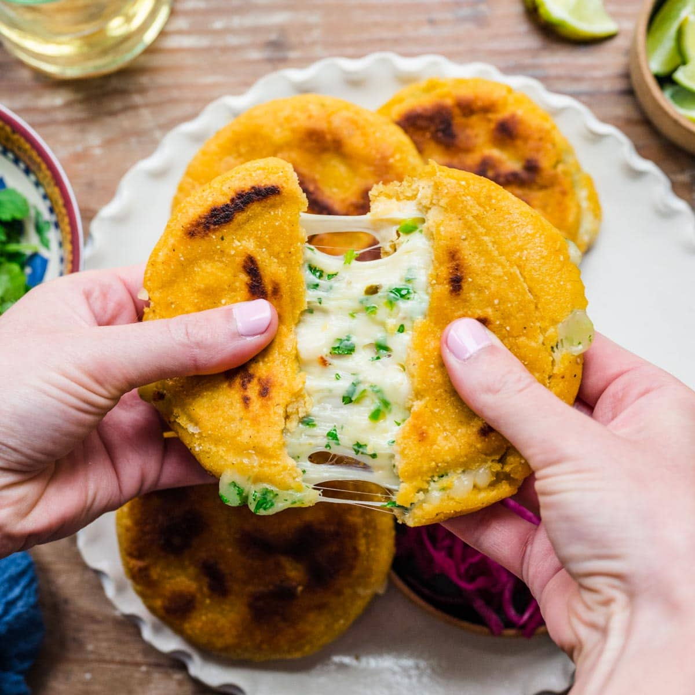

Pupusa

simple pork pupusas
Ingredients
- Pork shoulder
- Shredded mozzarella
- salt
- pepper
- Masa de maiz
- Hot Water
- Oil
- Cook the pork: Slice the pork into 1-inch cubes and season with salt and pepper. Heat a skillet over medium-high heat, and brown on all sides until golden brown, about 5 minutes.
- Once cooled, blend pork into a paste-like consistency using a blender or food processor.
- In a medium bowl, combine the blended pork with the cheese, mix well.
- To make the dough, add the masa de maíz and salt to taste to a large bowl. Slowly add 3 cups of hot (but not boiling) water, and mix with a wooden spoon (or your hands) until thoroughly incorporated.
- Divide dough into 6 to 8 equal pieces, depending on how large you want your pupusas to be. Begin to flatten each dough ball with the palm of your hand until it’s about 4 inches wide. Add 1 heaping tablespoon of filling to the center of each flattened dough ball.
- Wrap the dough around the filling by sealing the edges like a dumpling, then form it into a ball again by tucking the edges and compressing the dough. Using the palms of your hands, flatten into a half-inch-thick disc, about 4 inches wide.
- Cook over medium-high heat for 2-3 minutes on each side until golden brown.
Home